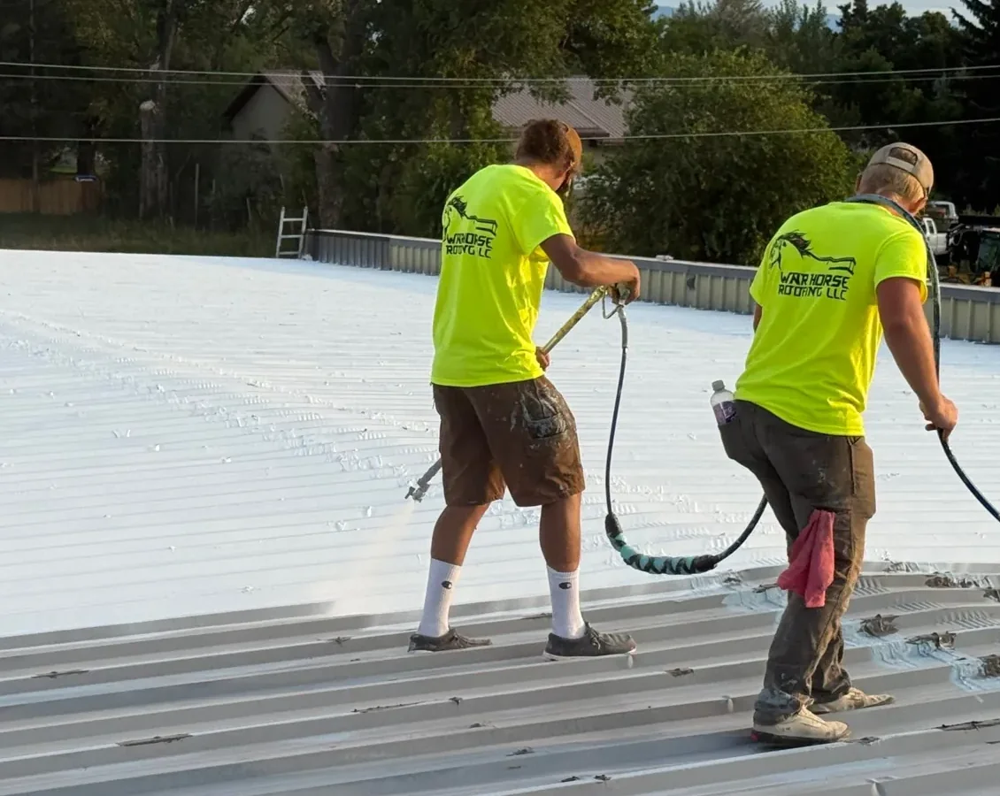
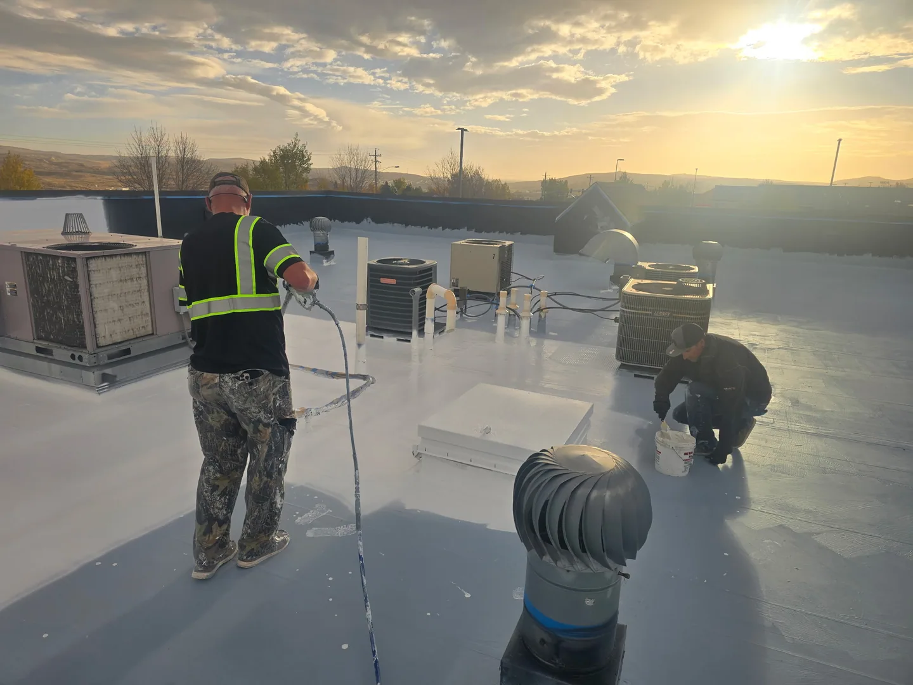
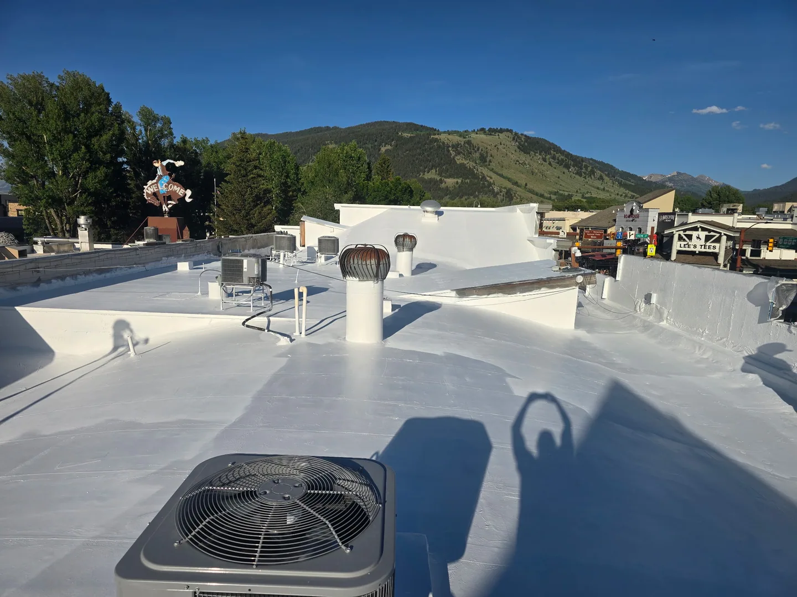
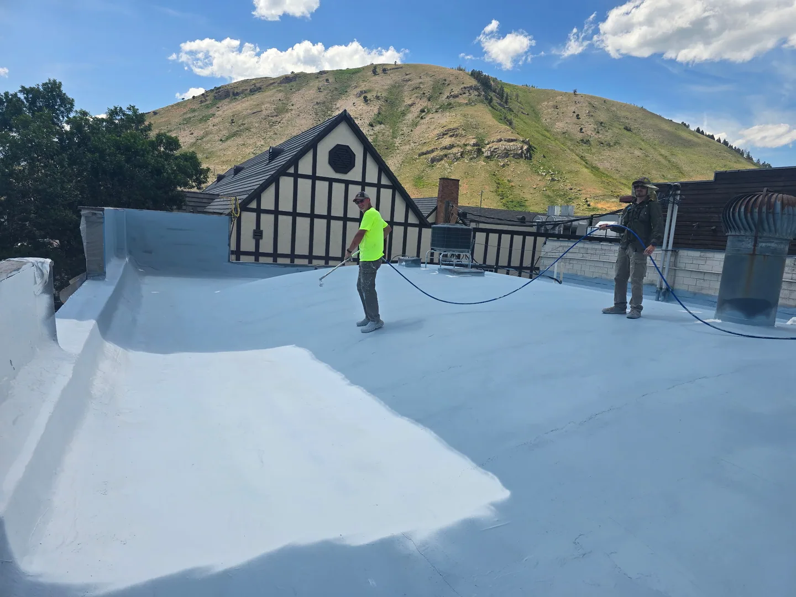
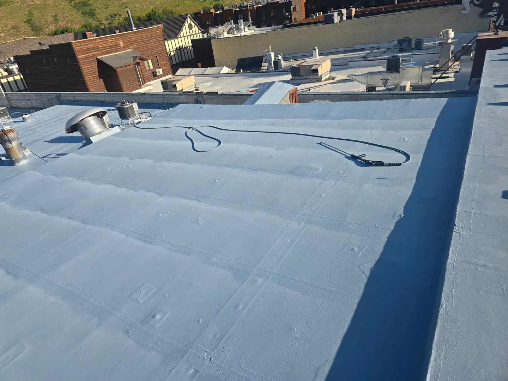

Commercial roofing services
We restore commercial metal and low-slope roofs. Our work includes leak repairs, seam reinforcement, and protective coatings applied over a sound existing roof.
Request a quote
Metal roof restoration
On a metal roof, leaks often start at a fastener or where two panels overlap. We clean the panels, address corrosion, and prime the surface where needed.
We then seal exposed fasteners, reinforce the panel laps, and apply a reflective topcoat across the roof.

Flat roof restoration
We embed polyester fabric in a wet base coat to reinforce the seams and the transitions around walls, hatches, and equipment. A protective topcoat covers the reinforced surface.



See the layers in a fabric-reinforced roof
On this Wyoming clinic roof, four-inch fabric strips reinforced individual seams. A second layer of fabric covered the entire roof.
- Reflective topcoat
- Full-surface fabric
- 4-inch seam strip
- Base coat
- Primed existing roof
Can your roof be restored?
Show us where water appeared inside and which repairs have already been tried. On the roof, we check how water drains, how well the existing material is attached, and the condition of seams and equipment curbs.
- Local repair
- A leak confined to one seam or equipment curb may need a targeted repair if the roof around it is sound.
- Roof restoration
- If the underlying roof is sound and the finish has worn away, the quote can cover repairs, surface preparation, and a compatible coating system.
- Replacement work
- Trapped moisture, loose material, or a damaged deck may require removal and replacement of affected sections before coating.
Roof coating in practice
On this commercial roof in Jackson, the crew cleaned the old surface, coated the open roof, and carried the finish up the walls and around the vents.



More photos from this roof





Warranty and scheduling
Can my roof qualify for a 20-year warranty?
A limited manufacturer’s warranty of up to 20 years may be available on qualifying installations with manufacturer approval. We can review the term, coverage, and maintenance requirements for your proposed system.
What goes into a quote?
We look at the areas to repair, preparation for your roof material, and the system to apply. We also review access and work around seams, walls, drains, and equipment.
Can the building stay open?
That depends on roof access and the work overhead. Let us know which entrances, loading bays, or rooftop equipment must stay in use so we can plan the work with you.